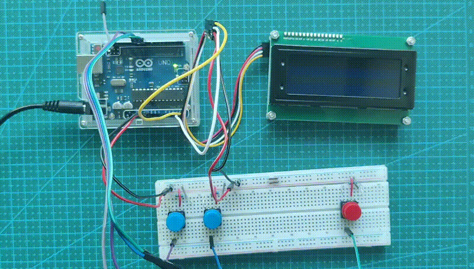

Arduino LCD Experiment#

I got hands on one of these popular (in the maker scene) character displays (mine has 20 columns and 4 rows) and I was planning to use it for <something> (I might mention later).
Although before any of that I wanted to see how this LCD looks and behaves when text is moving on the screen and so... I made a game for it :)
I used the cheapest basic arduino kit for all the necessary wiring and it was also my first entry into microcontroller world (yay).
I have to say: arduino IDE and its file organization (sketches) and their flavour of C++ is not my cup of tea (give me plain C please)
Anyway...
Because this LCD is character based - I did all my development in my terminal ¯\_(ツ)_/¯
Terminal is also character based and so it was no brainer for me (and saving arduino's flash storage along the way).
I had a dummy function which would later be replaced by actual LCD interfacing routine in the final arduino sketch but other than that (and inputs) the whole logic was written in plain old C (C99 to be exact) and I could test the game loop, states, logic etc. inside my shell.
Once I was happy with the result - I needed to port it to arduino's C++ flavour and implement inputs (buttons) and timer.
It was not straightforward:
- Maybe I needed to set some compiler flags somewhere in the IDE...
- C99 was not supported (I had to rewrite struct initializations and other stuff)
- I encountered some very weird errors when I was using typedefs and enums (I defined my own bool type)
- At the end I replaced some (not all, so strange) enums and typedefs with just
uint8_tand lost my defined names which sucks
Btw. this microcontroller (ATmega328P) has only 2 kilobytes of SRAM (2048 bytes) - my game needed less than half to fit all its code and data. There is a better version of the game that can utilize the rest (add shooting?).
Nevertheless... This project, I mean thing took me a whole weekend and some to get to the state below.

It was fun.
Next: Pico and STM32 ツ